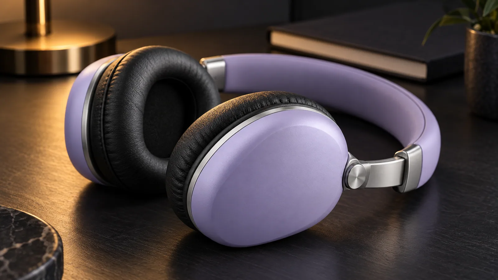

Siente cada
frecuencia.
Lleva tu música contigo. Wave One reúne líneas suaves, almohadillas envolventes y un ajuste pensado para acompañar tu día.
Conoce Wave One ↗ Wave One · tres acabados, una misma forma.
Wave One · tres acabados, una misma forma.Tu ritmo.
Sin interrupciones.
Una diadema de líneas limpias, ajustes metálicos y almohadillas negras que abrazan el oído. Elige el acabado que más se parece a ti.
Color: Lavanda
Ponle tu propia
banda sonora.
Del trayecto de la mañana a un paseo sin destino. Tu música tiene un lugar en los momentos que son tuyos.
Lo que ves.
Lo que llevas contigo.
El acabado lavanda se encuentra con el metal y las texturas negras. Un equilibrio entre formas suaves y piezas precisas.
- Modelo
- Wave One
- Acabados
- Lavanda · Grafito · Lima
- Diadema
- Deslizadores metálicos
- Almohadillas
- Envolventes, acabado negro

Todo un poco
más claro.
¿Qué cambia entre los tres acabados?
La forma y las piezas son las mismas. Lavanda tiene un tono suave; Grafito es sobrio y oscuro; Lima añade un color vivo. Puedes compararlos en el selector.
¿Cómo funciona el ajuste de la diadema?
Los deslizadores metálicos permiten ampliar la diadema a ambos lados. Las almohadillas rodean el oído y completan la forma del auricular.
¿Puedo guardar más de un acabado en mi bolsa?
Sí. Cada color aparece como una línea independiente. Puedes añadir varias unidades, ajustar cantidades o eliminar un acabado. La bolsa se conserva en este navegador.
Del producto
a todo organizado.
Explora el panel de gestión de la tienda y el recorrido de la información de un pedido.